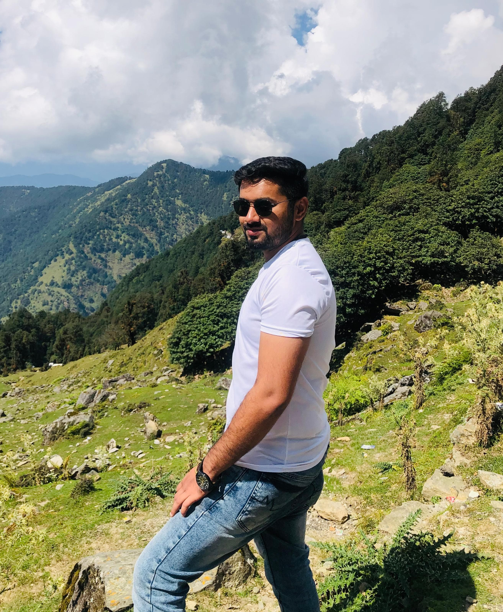

Sayan Mukherjee
Account Automation Owner (AAO)

Summary
An IT Engineer with a demonstrated history of working in the IT Industry for the last 3.5 years. A Tech lead handling 3 prime centers of Noida location. Quick learner who is always willing to learn new skills and excel.
Education
- B.Tech - Completed In the year 2020
- Intermediate -Completed in year 2016
- Matriculation -Completed in the year 2014
Work Experience
- Worked as site engineer in DWS (2020-2021)
- Worked as Shift Lead of DWS (2021-2022)
- Worked as Team Lead in WIPRO (2022-2023)
- Working as Account Automation Owner in WIPRO (2023- till now)
Skills
- C Programming
- JAVA (J2SE)
- PLC
- SCADA
- DCS
- System troubleshooting
- MIS (MS Excel)
- Team Handeling
- Automation testing in Client Environment(Next-think,NanoHeal,Systrack)
Award
- Supertech Award for best engineer